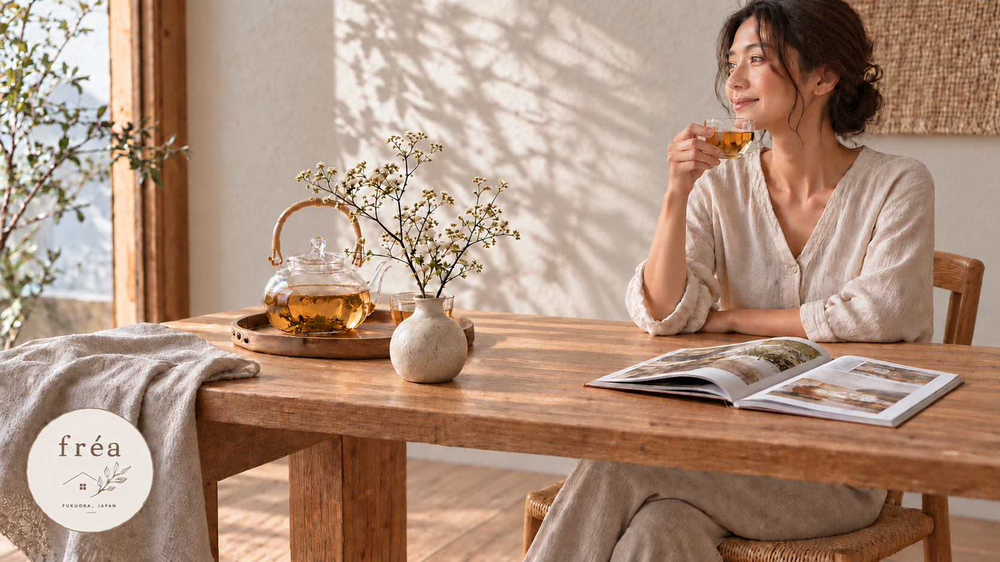

正在載入商品分類…
把喜歡的日常，從日本帶回台灣，也從台灣送到日本。提供商品名稱、連結與數量，fréa 確認供貨與費用後為您報價。確認購買並完成匯款後，再安排採購與寄送。
台湾で見つけたお気に入りを、日本の暮らしへ。商品情報をお送りいただき、見積もりとご入金の確認後に購入・発送を手配します。

找到喜歡的商品，歡迎交給我們代購。 お気に入りの商品が見つかりましたら、購入代行は私たちにお任せください。